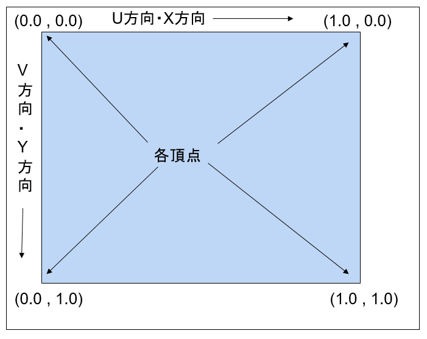
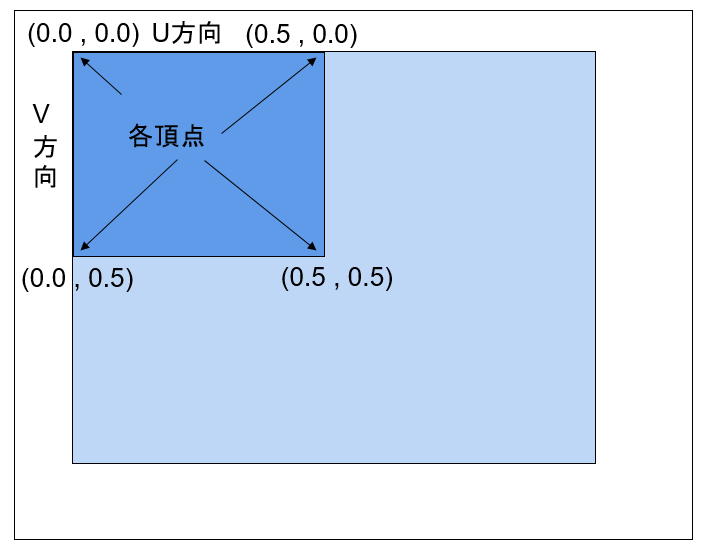
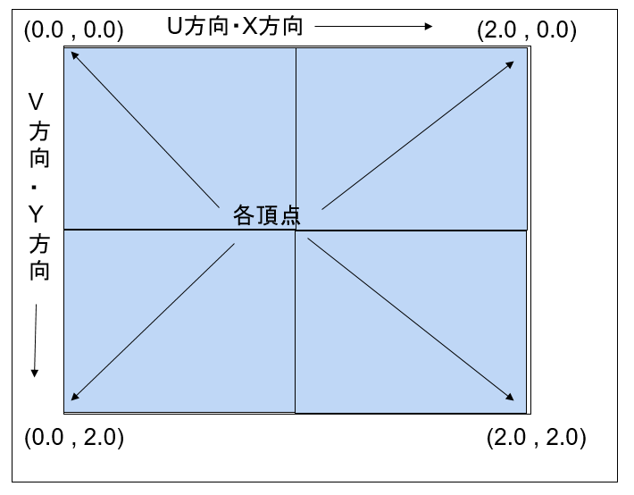

４．Draw系コンポーネント
４０２．２Ｄの描画（スプライト）
この項ではスプライトの描画について述べます。BaseCrossでは、２Ｄのオブジェクトを表現する方法として２つの方法があります。
１つめはスプライトと称し、完全な２Ｄ描画です。この場合はオブジェクトは、スクリーンに直接描画され、奥行きは持ちません。
２つめは３Ｄ上の２次元オブジェクトです。この場合は、３Ｄステージ上に配置されます。３Ｄ上の２Ｄオブジェクトはスクエアと称しています。
では、FullSample402をビルドし実行してみましょう。以下のような画面が出てきます。

図0402a
ここに配置されているオブジェクトはFullTutorial006に配置されているのと同じものです。スプライトオブジェクトのみを取り出したものです。３Ｄでゲームを作成した場合はスプライトはFullTutorial006のように手前の絶対的な位置に表示されます。カメラの角度やライティングに影響されることがありません。
しかし、完全に２Ｄで作成されるメニューステージや２Ｄのゲームを作成する場合は、３Ｄ用のカメラやライティングや影の作成は無駄な処理となります。
このようなステージを作成する場合はFullSample402のようなごくシンプルなステージを作成して、そこに配置するといいでしょう。
ビューの作成
GameStage.cppのGameStage::CreateViewLight()を以下のように記述します。
//ビューの作成
void GameStage::CreateViewLight() {
auto PtrView = CreateViewSingleView>();
//シャドウマップは使用しない
SetShadowmapDraw(false);
}
//シャドウマップは使用しない
SetShadowmapDraw(false);
スプライトはシャドウマップコンポーネントを設定しても何の対応もしませんので、デフォルトのままでも問題ありませんが、シャドウマップ描画はそれなりに時間を使う処理ですので、いらない場合は使わない設定にするのをお勧めします。
PCスプライトの作成
スプライトに限らずDraw系コンポーネントはPCなんたらのようにコンポーネントの先頭に頂点フォーマットを意味する略字が入ってますPは頂点位置、Cはカラー情報です。ですからPCSpriteDrawという描画コンポーネントは位置とカラー情報を持つ、スプライト用頂点フォーマットといいう意味です。さてそのことを前提に、TraceSpriteクラスの作成を見てみましょう。左側で、透明になったり色がついたりするオブジェクトです。Character.h/cppに記述があります。
まず、宣言部ですが
//--------------------------------------------------------------------------------------
/// 半透明のスプライト
//--------------------------------------------------------------------------------------
class TraceSprite : public GameObject {
bool m_Trace;
Vector2 m_StartScale;
Vector3 m_StartPos;
float m_TotalTime;
//バックアップ頂点データ
vector<VertexPositionColor> m_BackupVertices;
public:
//--------------------------------------------------------------------------------------
/*!
@brief コンストラクタ
@param[in] StagePtr ステージ
@param[in] Trace 透明処理するかどうか
@param[in] StartScale 初期スケール
@param[in] StartPos 初期位置
*/
//--------------------------------------------------------------------------------------
TraceSprite(const shared_ptr<Stage>& StagePtr, bool Trace,
const Vector2& StartScale, const Vector3& StartPos);
//--------------------------------------------------------------------------------------
/*!
@brief デストラクタ
*/
//--------------------------------------------------------------------------------------
virtual ~TraceSprite();
//--------------------------------------------------------------------------------------
/*!
@brief 初期化
@return なし
*/
//--------------------------------------------------------------------------------------
virtual void OnCreate() override;
//--------------------------------------------------------------------------------------
/*!
@brief 更新
@return なし
*/
//--------------------------------------------------------------------------------------
virtual void OnUpdate()override;
};
それでは、コンストラクタから実体を見てみます。Character.cppにあるTraceSprite::TraceSprite()関数です。
TraceSprite::TraceSprite(const shared_ptr<Stage>& StagePtr, bool Trace,
const Vector2& StartScale, const Vector3& StartPos) :
GameObject(StagePtr),
m_Trace(Trace),
m_StartScale(StartScale),
m_StartPos(StartPos),
m_TotalTime(0)
{}
StartScaleやStartPosは初期の大きさと初期位置です。大きさはVector2ですが位置はVector3なのを注意しましょう。
２Ｄスプライトにおける、Ｚ位置というのは、どちらがどちらより手前に描画されるか、を設定します。ただし、0.0fから1.0fの間を指定します。この値は描画直前にZ順番ソートされます。Zが大きいほうが奥に行きます。同じ値に設定した場合は、オブジェクトの配置した順番になります。
続いてTraceSprite::OnCreate()関数ですが、ここでは頂点を作成して、それらを描画コンポーネントに設定します。
void TraceSprite::OnCreate() {
float HelfSize = 0.5f;
//頂点配列
m_BackupVertices = {
{ VertexPositionColor(Vector3(-HelfSize, HelfSize, 0),Color4(1.0f,0.0f,0.0f,0.0f)) },
{ VertexPositionColor(Vector3(HelfSize, HelfSize, 0), Color4(0.0f, 1.0f, 0.0f, 0.0f)) },
{ VertexPositionColor(Vector3(-HelfSize, -HelfSize, 0), Color4(0.0f, 0.0f, 1.0f, 0.0f)) },
{ VertexPositionColor(Vector3(HelfSize, -HelfSize, 0), Color4(0.0f, 0.0f, 0, 0.0f)) },
};
//インデックス配列
vector<uint16_t> indices = { 0, 1, 2, 1, 3, 2 };
SetAlphaActive(m_Trace);
auto PtrTransform = GetComponent<Transform>();
PtrTransform->SetScale(m_StartScale.x, m_StartScale.y, 1.0f);
PtrTransform->SetRotation(0, 0, 0);
PtrTransform->SetPosition(m_StartPos);
//頂点とインデックスを指定してスプライト作成
AddComponent<PCSpriteDraw>(m_BackupVertices, indices);
}
ここでは幅及び高さが1.0の矩形を作成しています。矩形を表現するのに三角形を２つ描画します。色情報には自動的にグラデーションがかかるように、頂点毎に別の色を設定しています。
頂点とインデックスを作成したら
AddComponent<PCSpriteDraw>(m_BackupVertices, indices);
PCスプライトの更新処理
更新処理はTraceSprite::OnUpdate()に記述します。ここではsinカーブを利用して、頂点色の透明要素を変更します。
void TraceSprite::OnUpdate() {
float ElapsedTime = App::GetApp()->GetElapsedTime();
m_TotalTime += ElapsedTime;
if (m_TotalTime >= XM_PI) {
m_TotalTime = 0;
}
vector<VertexPositionColor> NewVertices;
for (size_t i = 0; i < m_BackupVertices.size(); i++) {
Color4 col = m_BackupVertices[i].color;
col.w = sin(m_TotalTime);
auto v = VertexPositionColor(
m_BackupVertices[i].position,
col
);
NewVertices.push_back(v);
}
auto PtrDraw = GetComponent<PCSpriteDraw>();
PtrDraw->UpdateVertices(NewVertices);
}
ここで気を付けたいのは、m_BackupVerticesを直接変更するのではなく、いったんauto vという形で頂点データにコピーして、それをNewVerticesという配列を作成しているところです。m_BackupVerticesの各データを破棄してしまっていいのであれば直接変化させてもいいのですが、多くの場合そうではないので、注意しましょう。最後に
auto PtrDraw = GetComponent<PCSpriteDraw>();
PtrDraw->UpdateVertices(NewVertices);
このように記述すると、PCSpriteDrawコンポーネントは描画のタイミングで新しい頂点を使用して描画するようにになります。
以上がスプライトを実装する場合の基本です。ほかの３Ｄデータと違い、スプライトは、頂点データが小さいのと、また、頂点の変更が行われるのが基本と考えられますので、オブジェクトごとにスプライト用のメッシュを作成します。
しかし、発射する砲弾などをスプライトで表現する場合、砲弾ごとにメッシュを作成したのではリソースの無駄になります。そのような場合の方法は、別のサンプルで説明します。
PTスプライトの作成
PCスプライトが位置と色を持つ頂点とすればPTスプライトは位置とテクスチャ情報を持つ頂点です。このサンプルにはScrollSpriteクラスとScoreSpriteクラスがあります。
設定方法は頂点フォーマットが違う以外は、PCスプライトの作成と大きくは変わりません。
しかし、これらのオブジェクトはテクスチャUV値の変更を行っています。UV値は、２Ｄのメッシュに限ったことではないのですが、メッシュの頂点とテクスチャの張り付け方には以下のような決まりがあります。
まず、基本的にはＵ方向（Ｘ）に0.0fから1.0f、V方向（Y）に0.0fから1.0fというように各頂点を設定すると、この面にはテクスチャ全体が張り付きます。（下図）

図0402b
それに対して、以下のようにUV値を設定すると、テクスチャを分割して張り付けるようになります。ScoreSpriteクラスの数字のテクスチャの貼り付け方はこのような形です。またこの方法はテクスチャアニメーションを表現するのに役立ちます。1つのテクスチャに複数の画像を含ませて、分割した部分を順番に表示するとアニメーションになりますね。

図0402c
そして下図はタイリング処理です。1つのテクスチャを一つの面に複数貼り付けます。下図がそのイメージです。ScrollSpriteクラスがそうですね。
図0402d
さて、これらの実装方法ですが、それぞれのOnUpdate()関数で、UV値を変化させてます。
以下はScoreSprite::OnUpdate()関数ですが、
void ScoreSprite::OnUpdate() {
vector<VertexPositionTexture> NewVertices;
UINT Num;
int VerNum = 0;
for (UINT i = m_NumberOfDigits; i > 0; i--) {
UINT Base = (UINT)pow(10, i);
Num = ((UINT)m_Score) % Base;
Num = Num / (Base / 10);
Vector2 UV0 = m_BackupVertices[VerNum].textureCoordinate;
UV0.x = (float)Num / 10.0f;
auto v = VertexPositionTexture(
m_BackupVertices[VerNum].position,
UV0
);
NewVertices.push_back(v);
Vector2 UV1 = m_BackupVertices[VerNum + 1].textureCoordinate;
UV1.x = UV0.x + 0.1f;
v = VertexPositionTexture(
m_BackupVertices[VerNum + 1].position,
UV1
);
NewVertices.push_back(v);
Vector2 UV2 = m_BackupVertices[VerNum + 2].textureCoordinate;
UV2.x = UV0.x;
v = VertexPositionTexture(
m_BackupVertices[VerNum + 2].position,
UV2
);
NewVertices.push_back(v);
Vector2 UV3 = m_BackupVertices[VerNum + 3].textureCoordinate;
UV3.x = UV0.x + 0.1f;
v = VertexPositionTexture(
m_BackupVertices[VerNum + 3].position,
UV3
);
NewVertices.push_back(v);
VerNum += 4;
}
auto PtrDraw = GetComponent<PTSpriteDraw>();
PtrDraw->UpdateVertices(NewVertices);
}

図0402e
そして以下は、ScrollSpriteクラスのUVの変化です。こちらはタイリング処理になってます。タイリングはOnCreate()関数などで、SetSamplerState(SamplerState::LinearWrap)とサンプラーをラッピング（包み込む）処理に設定します。以下のような形です。
void ScrollSprite::OnCreate() {
//中略
//頂点とインデックスを指定してスプライト作成
auto PtrDraw = AddComponent<PTSpriteDraw>(m_BackupVertices, indices);
PtrDraw->SetSamplerState(SamplerState::LinearWrap);
PtrDraw->SetTextureResource(m_TextureKey);
}
void ScrollSprite::OnUpdate() {
float ElapsedTime = App::GetApp()->GetElapsedTime();
m_TotalTime += ElapsedTime;
if (m_TotalTime > 1.0f) {
m_TotalTime = 0;
}
vector<VertexPositionTexture> NewVertices;
for (size_t i = 0; i < m_BackupVertices.size(); i++) {
Vector2 UV = m_BackupVertices[i].textureCoordinate;
if (UV.x == 0.0f) {
UV.x = m_TotalTime;
}
else if (UV.x == 4.0f) {
UV.x += m_TotalTime;
}
auto v = VertexPositionTexture(
m_BackupVertices[i].position,
UV
);
NewVertices.push_back(v);
}
auto PtrDraw = GetComponent<PTSpriteDraw>();
PtrDraw->UpdateVertices(NewVertices);
}
PCTスプライトの作成
位置、カラー要素、テクスチャUVの３つの頂点データを持ったスプライトがPCTスプライトです。サンプルではWallSprite（壁模様のスプライト）がこの処理をしています。このオブジェクトは動的な変化を起こしてないので、OnCreate()関数で頂点を作成して描画コンポーネントを設定したらそれで終了です。なお、ScrollSpriteクラスがこのWallSpriteに乗っているように表現されています。WallSpriteのZ位置は0.1fになっていますのでWallSpriteが奥に表示されます。GameStage::CreateWallSprite()を確認しましょう。
それぞれのクラスを作成したら、GameStageクラスに各オブジェクトの作成関数を記述し、最後にGameStage::OnCreate()でビューや各オブジェクトを追加します。